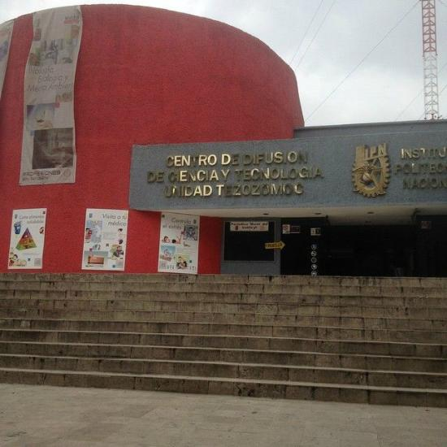
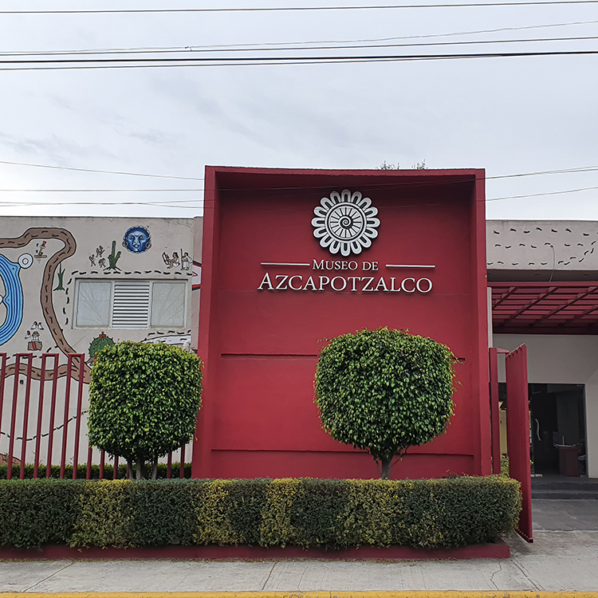

En esta alcaldia solo ubicaremos 2 museos en total, de los cuales son los siguientes.

Museo Tezozómoc
Horarios y costos
Abierto al público de lunes a viernes de 9:00 a 17:00 hrs.
Fines de semana y días festivos de 10:00 a 17:00 hrs.
Entrada general: $23
Estudiantes, profesores, personas de la tercera edad, personas con discapacidad, egresados IPN y jubilados IPN: $11.
IPN/Centro de Difusión de Ciencia y Tecnología
Av. Zempoaltecas s/n esq. Av. Manuel Salazar
Col. Ex Hacienda El Rosario
CP 02420
Azcapotzalco, Azcapotzalco, Ciudad de México
Tels.: (55) 5729 6000 exts. 64801, 64817

Museo de Azcapotzalco
Horarios y costos
Abierto al público de martes a domingo de 10:00 a 17:00 hrs.
Entrada libre
Alcaldía Azcapotzalco
Hacienda del Rosario s/n
Col. Prados del Rosario
CP 02410
Azcapotzalco, Azcapotzalco, Ciudad de México
Tels.: (55) 5318 5334